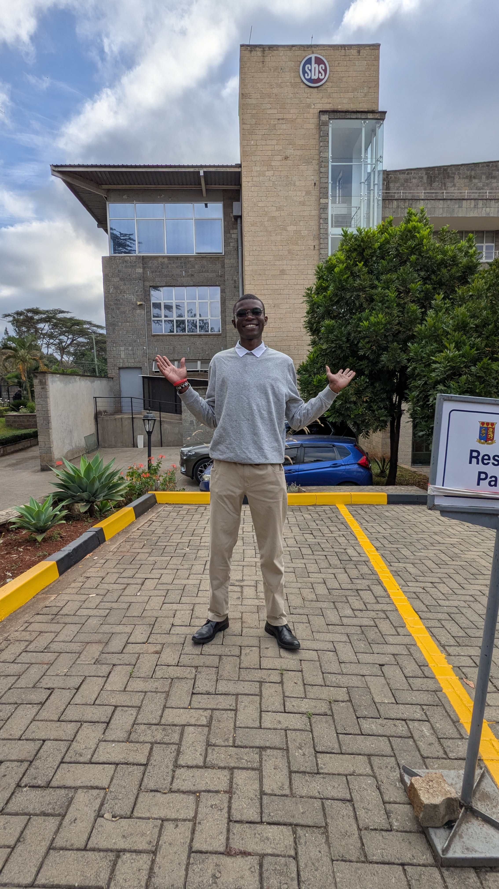

Shadrack Maisiba
I'm
About
I am a Computer Science student at Egerton University with a strong interest in software development, artificial intelligence, cybersecurity, and emerging technologies. I enjoy learning how technology works, solving problems, and developing practical solutions through programming and innovation. My interests include building web and mobile applications, exploring AI-powered solutions, and improving my technical skills through hands-on projects. I am continuously learning and looking for opportunities to collaborate, gain experience, and contribute to meaningful technology projects.
Computer Science Student & Aspiring Developer.
I am pursuing a Bachelor of Science in Computer Science at Egerton University. My technical interests span software engineering, web development, artificial intelligence, databases, networking, and cybersecurity.
- Location: Nakuru, Kenya
- Website: #
- Github: techshadymaisiba
- LinkedIn: Shadrack Maisiba
- Degree: BSc Computer Science
- Availability: Open to internships and relevant opportunities
- Career Interest: Software Engineering, AI, Cybersecurity, IoT
- Technical Focus: Web Development, Application Development, AI Evaluation
I believe technology is most valuable when it solves real problems. I am focused on developing my skills, building useful projects, and growing into a versatile technology professional.
Happy Clients
Projects
Hours Of Support
Hard Workers
Skills
My technical skills span programming, web development, application development, and computer systems. I continue to strengthen my abilities through coursework, hands-on projects, and independent learning.
Also Exploring
Artificial Intelligence · Cybersecurity · Flutter · Firebase · Internet of Things (IoT) · Data Structures & Algorithms · AI Evaluation & Data Annotation
Resume
Computer Science student at Egerton University with practical experience in computer laboratory support, software management, and technology troubleshooting. Focused on software development, artificial intelligence, and building practical technology solutions through academic and personal projects.
Professional Summary
Shadrack Maisiba
Computer Science student interested in software engineering, web development, artificial intelligence, and cybersecurity. Combines academic learning with practical technology experience and independent software projects.
-
Egerton University, Njoro, Kenya
Open to internships, collaborations, and technology opportunities
Education
Bachelor of Science in Computer Science
2024 - 2028 (Expected)
Egerton University, Njoro, Kenya
Currently pursuing a degree in Computer Science, developing knowledge in programming, data structures and algorithms, database management, operating systems, computer networks, and software engineering.
Kenya Certificate of Secondary Education (KCSE)
2023
Kanga High School, Kenya
Completed secondary education, earning a B+ grade with 70 points.
Kenya Certificate of Primary Education (KCPE)
2019
EPC Kipkaren Academy, Kenya
Completed primary education, scoring 390 marks.
Professional Experience
Lab Technician & Software Manager
Jan 2024- Aug 2024
EPC Kipkaren Academy, Kenya
- Supported computer laboratory operations and the use of computer systems in an educational environment.
- Handled software management and assisted with software-related technical issues.
- Applied practical computer skills to troubleshoot problems and support day-to-day technology use.
- Helped maintain functional computer systems and a usable software environment for learning activities.
AI Data & Task Contributor
Jan 2024- Aug 2024
CROWDGEN, CLICKWORKER, AFTERQUERY, ONEFORMA, OUTLIER
- Participate in digital tasks involving artificial intelligence and online work.
- Develop experience following task instructions and working with digital platforms.
- Build familiarity with the quality and accuracy requirements of AI-related tasks.
Lab Technician & Software Manager
Jan 2024- Aug 2024
EPC Kipkaren Academy, Kenya
- Supported computer laboratory operations and the use of computer systems in an educational environment.
- Handled software management and assisted with software-related technical issues.
- Applied practical computer skills to troubleshoot problems and support day-to-day technology use.
- Helped maintain functional computer systems and a usable software environment for learning activities.
Portfolio
A collection of software projects and technology concepts reflecting my interests in application development, artificial intelligence, and innovative solutions to real-world problems. Each project represents an opportunity to apply my knowledge and develop practical technical skills.
- All
- Applications
- Innovation
- Web


Services
I apply my computer science knowledge to software development, web technologies, technical support, and database solutions. I am continuously improving my skills while building practical projects and exploring new technologies.
Web Development
Building responsive web pages using HTML, CSS, Bootstrap, and JavaScript, with a focus on usability, clean layouts, and accessible interfaces.
Software Development
Developing and improving software applications using programming languages such as Python and Java, with an interest in practical, maintainable solutions.
Computer Support
Assisting with computer setup, software installation, troubleshooting, and routine technical issues, informed by my experience supporting computer lab operations.
Database Solutions
Working with SQL, database concepts, and structured data to support data storage, organization, retrieval, and academic application projects.
Cybersecurity Exploration
Exploring Linux systems, cybersecurity fundamentals, and system security while developing my knowledge of safer computing practices.
AI and Technology Projects
Exploring artificial intelligence, AI evaluation, data annotation, and IoT through learning activities and project development.
Testimonials
Necessitatibus eius consequatur ex aliquid fuga eum quidem sint consectetur velit
Proin iaculis purus consequat sem cure digni ssim donec porttitora entum suscipit rhoncus. Accusantium quam, ultricies eget id, aliquam eget nibh et. Maecen aliquam, risus at semper.
Saul Goodman
Ceo & Founder

Export tempor illum tamen malis malis eram quae irure esse labore quem cillum quid cillum eram malis quorum velit fore eram velit sunt aliqua noster fugiat irure amet legam anim culpa.
Sara Wilsson
Designer

Enim nisi quem export duis labore cillum quae magna enim sint quorum nulla quem veniam duis minim tempor labore quem eram duis noster aute amet eram fore quis sint minim.
Jena Karlis
Store Owner

Fugiat enim eram quae cillum dolore dolor amet nulla culpa multos export minim fugiat minim velit minim dolor enim duis veniam ipsum anim magna sunt elit fore quem dolore labore illum veniam.
John Larson
Entrepreneur

Contact
Necessitatibus eius consequatur ex aliquid fuga eum quidem sint consectetur velit
Address
A108 Adam Street, New York, NY 535022
Call Us
+1 5589 55488 55
Email Us
info@example.com